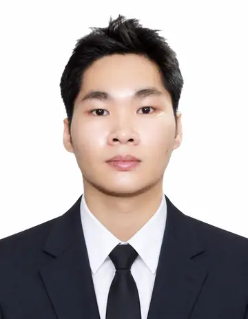
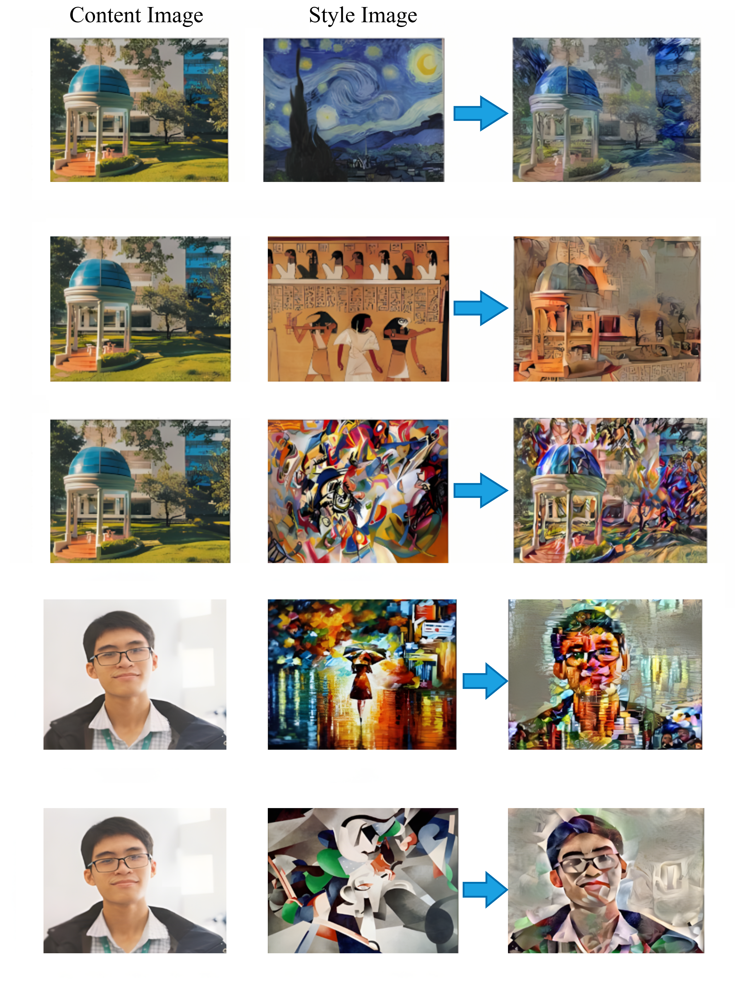
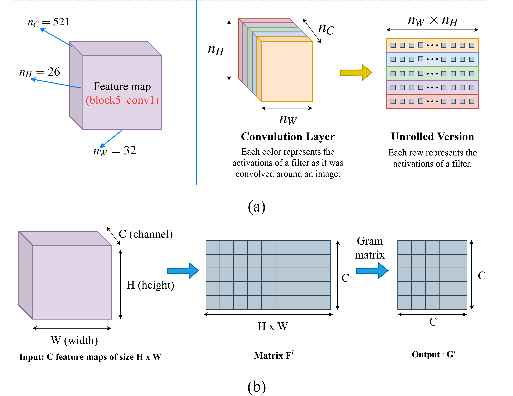

Thien P. Nguyen
Recent graduate in Electronics and
Telecommunications Engineering,
Ton Duc Thang University, Vietnam

.png)
🤖 SHORT BIO

Nguyen Phuc Thien was born in Dak Nong, Vietnam. He received the B.Sc. degree in Electronics and Telecommunications Engineering from Ton Duc Thang University, Ho Chi Minh City, Vietnam, in 2025. He is currently a Researcher with the Wireless Communications Research Group, Ton Duc Thang University, Vietnam.
His research interests include reconfigurable intelligent surfaces (RIS), satellite communications, physical layer security (PLS), energy harvesting (EH), and machine learning (ML) applications for wireless communications. He also serves as the Layout Editor of the Advances in Electrical and Electronic Engineering journal. He has published several papers as both first author and co-author in international journals and conferences.
🌟 RESEARCH INTERESTS

Machine Learning & Communications
- Intelligent wireless communications empowered by machine learning and data-driven optimization.
- Communication-efficient and robust designs for federated learning over wireless networks.

Satellite Communications
- Analytical modeling and performance evaluation of next-generation LEO/MEO satellite systems.
- Secure and reliable satellite communications with emphasis on physical layer security.

Reconfigurable Intelligent Surfaces (RIS)
- Reconfigurable Intelligent Surfaces for Integrated Sensing and Communication (RIS-ISAC)
- Hybrid Reconfigurable Intelligent Surfaces (Hybrid RIS)
- FAS + RIS

Other Topics
- Computer vision and intelligent visual understanding.
- Digital image processing for interdisciplinary engineering applications.